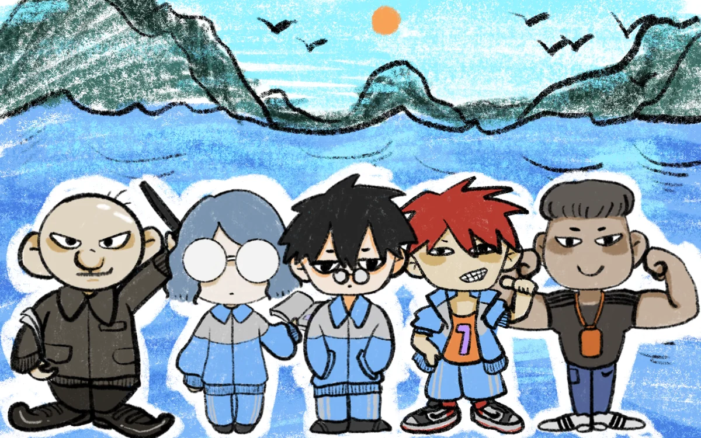

《沉默物语》· 全章合集 可玩文本
主笔：你的原文已全部收录 · 陈默台词与选项随时可改
点击推进 · 选项影响状态 · 进度自动保存

困倦40
清醒60
小半好感20
友谊10
点击继续

《沉默物语》
主题 · 困倦的跑
第一～六章 · 间章一/二（正文可玩版）
第一～六章 · 间章一/二（正文可玩版）
build v6 · 字体已内嵌 · 含BGM · 全章合集（八章串联 · 单一存档续玩）
▼ 点击继续
小半困倦 75
120
今日清单
晨读 · 背文言文
课间两分钟 · 去洗手间
回答老师提问
第一周
2400紧
杨大磊的困倦 20（几乎不动）
学生状态 全班健康
主任警告 0 次
学生状态 全班健康
主任警告 0 次
房贷 2200
扣款：第二周
扣款：第二周
车贷 800
扣款：第一周
扣款：第一周
股票 又跌了
红章：同一种
红章：同一种
幼儿园 600
扣款：第三周
扣款：第三周
加练卡
成绩会好看一点。
孩子们的腿会不好看。
打出时——远处传来跑鞋声
成绩会好看一点。
孩子们的腿会不好看。
打出时——远处传来跑鞋声
休息卡
膝盖只有一个。
主任的眼睛也是。
打出时——楼道里是甄主任的脚步声
膝盖只有一个。
主任的眼睛也是。
打出时——楼道里是甄主任的脚步声
三周后就是体考。排吧。
结算 · 路小半
这个判定，会被记住。
北体 →
跑酷 · 跑出个明天
你是赵千赤。枪已经响了。
← → / A D 换道 · 空格 跳跃（也可点击屏幕 左 / 中 / 右）
钢筋垛、水泥袋、安全帽堆——跳过去；手推车——换道躲开。
身后那东西由脚手架和钢筋拼成，脸是一面秒表。
放心，它追不上你。它们从来没追上过。
← → / A D 换道 · 空格 跳跃（也可点击屏幕 左 / 中 / 右）
钢筋垛、水泥袋、安全帽堆——跳过去；手推车——换道躲开。
身后那东西由脚手架和钢筋拼成，脸是一面秒表。
放心，它追不上你。它们从来没追上过。
点击继续
点击继续
—— 第五章 · 完 ——
困倦值40
清醒值60
好感0
友谊0
那天，没有一个人知道，跑道会记得所有事。
人 物 介 绍
点击人物查看档案